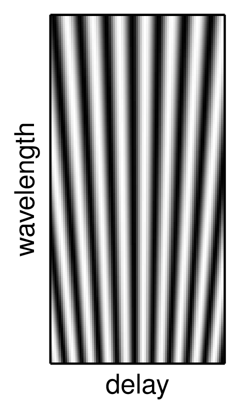
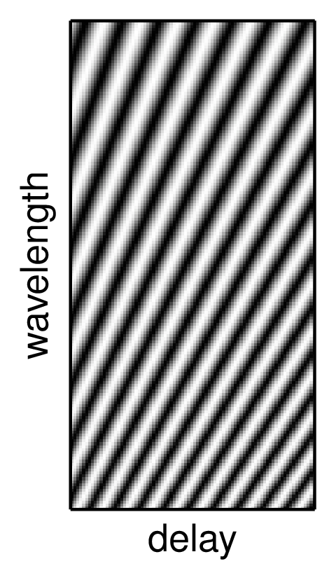

Chapter 6
Interferometric observation of faint objects
Figure 6.1: Signal-to-noise ratio (SNR) of the power spectrum as a function of integration time \texp for photon-noise-limited measurements (left) and read-noise-limited measurements (right) in the low-light-level regime. The SNR is normalised such that a system with a perfect fringe tracker which freezes the fringe motion would give an SNR of unity for an exposure time of t
0. Python file:
snrtau.pyFigure 6.2: The signal-to-noise ratio (SNR) of photon-noise-limited fringe power spectrum measurements as a function of the interferometer aperture diameter D. The SNR is calculated for an interferometer using no spatial filter (left) or a single-mode spatial filter (right). Different lines show the effects of different radial orders of adaptive correction: the lowest line corresponds to correction of Zernike wavefront modes up to radial order 1 (tip-tilt correction) and the uppermost line to correction up to radial order 5. The SNR plotted is normalised to unity for a perfectly-corrected aperture of diameter r
0, under the assumption that the source is sufficiently faint that the true SNR per exposure is much less than unity (the faint-source regime). Python file:
SNR-vs-diameter.pyFigure 6.3: The signal-to-noise ratio (SNR) of read-noise-limited or background-noise-limited fringe power spectrum measurements as a function of the interferometer aperture diameter D. All other details are as in Figure
6.2. Python file:
SNR-vs-diameter-readnoise.pyFigure 6.4: Schematic of a Shack-Hartmann wavefront sensor consisting of an array of lenslets (left) and the spot pattern seen on the detector (right). The upper row is for an unaberrated wavefront, which yields a regular spot pattern corresponding to the centres of the lenslets, while the lower row illustrates that the spots are displaced when the lenslets are illuminated with an aberrated beam. Diagram adapted from "Adaptive optics tutorial at CTIO" by A. Tokovinin,
http://www.ctio.noao.edu/~atokovin/tutorial/. SVG file:
shack-hartmann.svgFigure 6.5: Illustration of the effects of angular anisoplanatism. SVG file:
anisoplanatism.svgFigure 6.7: A sample fringe track showing a "phase jump" which occurs when the fringe phase is changing rapidly compared to the sample time of the fringe sensor. Python file:
phase-jump.pyFigure 6.8: Fringe envelope scans from the COAST interferometer. The change in OPD is approximately 60 microns during each 100 ms scan. The top trace shows the intensity as a function of time for two scans across the fringe envelope, and the bottom trace is the inferred envelope, which can be used to find the zero-OPD offset. From .
[c]0.267

[c]0.267
[c]0.46
[c]0.267

[c]0.267
[c]0.46
Figure 6.9: Spectrally dispersed fringe patterns (left), the fringe patterns remapped so that the fringe crests are parallel (middle) and the power spectra of the remapped fringes (right). The upper row corresponds to zero OPD while the lower row corresponds to a finite OPD, which causes the fringe phase to change linearly as a function of wavelength. Python file:
groupdelay-raw-untilted.py Python file:
groupdelay-raw-tilted.pyFigure 6.10: Simulated group delay signal at high light levels (left) and at a light level corresponding to the lowest signal-to-noise ratio at which the fringe envelope can be reliably tracked (right). Each column of pixels corresponds to the time-averaged group delay fringe power for different trial delays at a given instant in time. Python file:
group-delay-track-high-light.py Python file:
group-delay-track-low-light.pyFigure 6.11: Schematic design of the dual-star system in the Palomar Testbed Interferometer. Two parallel beam combiners measure fringes simultaneously on a primary and secondary star. From .
Figure 6.12: The object visibility modulus as a function of baseline a when observing a uniform disc. Python file:
jinc-log.py{kind=link}
{kind=link}
{kind=link}
{kind=link}
{kind=link}